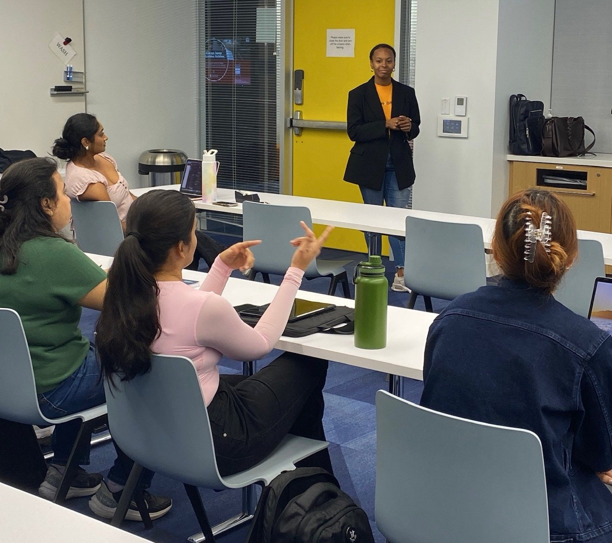
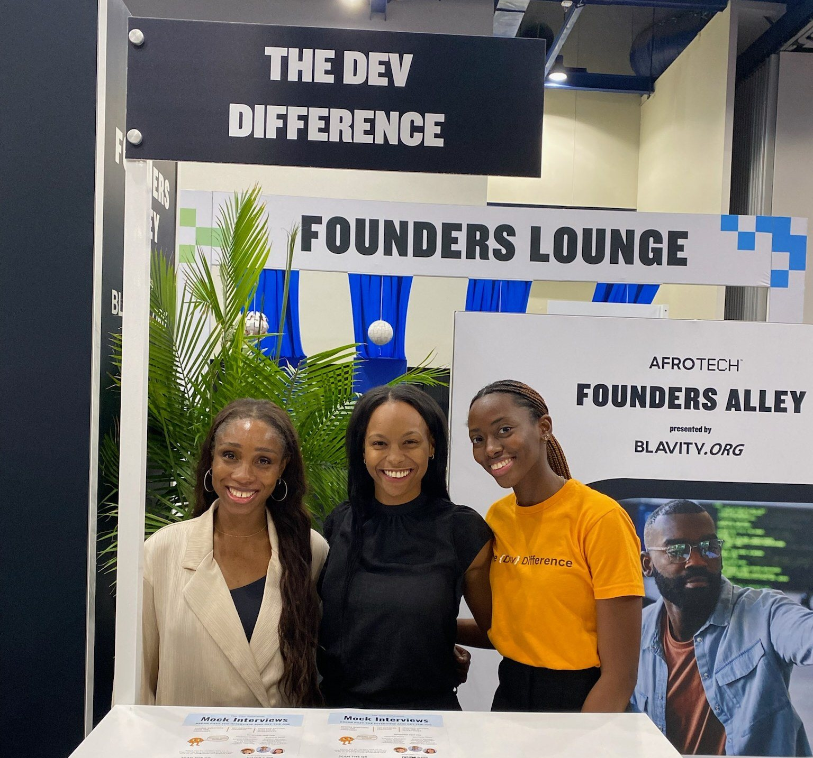

| Role | Co-founder and CEO |
| Team | Co-founders Jolene Bernagene and Moyosore Okeremi; Kate Kim, product engineer |
| When | 2023 to present |
| Reach | 2,000+ job seekers across 60+ college clubs and nonprofits |
| Built with | Generative AI, RAG, prompt engineering, voice models |
01Where it started
When I was a technical recruiter at Google, I watched the same thing happen over and over. Talented early-career candidates, many from underrepresented backgrounds, would make it to the technical interview and stall. They hadn't skipped the studying. Nobody had shown them how to talk through what they knew.
That gap stayed with me. In 2023, as generative AI was taking off, I saw a way to close it.
02The wedge: communication
I joined forces with two of my closest friends from Dartmouth, Jolene Bernagene and Moyosore Okeremi, who were working in product and engineering at Microsoft. Everyone knew LeetCode was the go-to for coding practice. But I knew the drop-off happened somewhere else.
So we interviewed hiring teams. They told us communication was consistently the biggest reason a candidate didn't get the job.
That became our difference. We didn't build another place to grind coding or system design problems. We built a place to practice talking about them, explaining your thinking out loud, and getting feedback immediately. Getting every line of code right mattered less than showing how you think.
That's how Buddy, our AI interviewer, was born. Our plan was to reach the right talent through universities, bootcamps, and nonprofits.
03From a challenge win to 60+ partners
We took the idea into the Social New Venture Challenge, and that's where a product idea started becoming a business. We learned how to build a real plan around what we'd made. We gained mentors, and we grew the team, including Kate Kim, who joined us as a product engineer. All of it pushed us toward a stronger product and a stronger business plan.
It worked. We won SNVC and $70,000, which fueled our first year of building. In that year, the mock interview tool was used by more than 60 college clubs and nonprofits nationwide and reached over 2,000 job seekers.

Those job seekers went on to internships and full-time engineering roles at Google, Microsoft, and startups, and to research positions in PhD programs. Today it's a partner mock interview tool for AnitaB.org, giving a community of over 110,000 members access.
04What building Buddy taught us
On the technical side, Buddy made us early practitioners of generative AI, RAG, and prompt engineering. As voice models and AI characters advanced, so did Buddy, and our community loved him for it. Our videos have earned over 18K views on social media, and we received a grant from ElevenLabs to grow Buddy's voice and personality.
05More than a tool
We also built a brand, and a sense of safety, around a really tough subject. These were years when the job market was bleak and people felt completely discarded. We wanted to give them hope and a place to grow, and we did just that.

Our business priorities have since shifted, but we still offer the mock interview tool for free and host workshops for job seekers on occasion. Our heart is simple: help people get great jobs. We're so proud of the tool that did that.